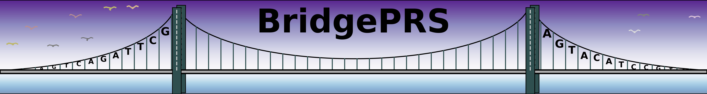

BridgePRS is a trans-ancestry PRS software which improves polygenic risk score analysis in under-represented target populations by combining summary statistics from under-represented target populations (e.g. Africans) with those from a powerful GWAS (e.g. Europeans).
Background
PRS require as input summary statistics from genome wide association studies. If you are unfamiliar with GWAS or need a refresher consider reading this paper.
- Genome-wide association studies (GWAS) involve analyzing the genomes of a large group of individuals. This involves testing millions of genetic variants (SNP) for association with a particular trait.
- For a binary trait (like blue or brown eyes) this involves comparing the frequency of genetic variations in each group to produce an odds-ratio (measure of association) and a p-value to measure the signficance of the realtionship at each SNP.
-
For continuous measures (like height) this results in an effect size (measure of continuous association) and p-value that measure the significance of our relationship.
-
GWAS results can be summarized in a sumstats file which looks like this:
| CHR | ID | REF | A1 | A1_FREQ | OBS_CT | SE | BETA | P |
|---|---|---|---|---|---|---|---|---|
| 1 | rs100 | A | T | 0.1 | 100 | 0.01 | 1.10 | 0.01 |
| 2 | rs200 | C | G | 0.2 | 100 | 0.02 | -1.10 | 0.05 |
| 3 | rs300 | G | A | 0.3 | 100 | 0.03 | 1.02 | 0.10 |
PRS basics
- Creating individual polygenic scores involves combine information across many genetic variants. A score is calculated by summing the genetic association values (beta-weights) for each allele in an individual, therefore, variants with stronger associations have a larger impact on the overall score.
- PRS software use different statistical methods to select variants and estimate their effect sizes beta for use in the PRS.
- BridgePRS, like many other PRS methods, require genotype and phenotype data from individuals (several hundred samples) in addition to GWAS summary statistics to estimate the PRS.
- The predictive power of PRS is assessed in genotype and phenotype data from unseen samples. BridgePRS reports PRS accuracy by the residual variance explained \(R^2\) (accounting for the variance explained by the non-genetic covariates included in the model). For binary traits Nagelkerke \(R^2\) is used.
Cross Population Analysis
The PRS Portability Problem
- Often when a PRS trained using data from one population, e.g. European, is applied to a population of different ancestry, e.g. African, the PRS model is less predictive.
- Often there is insufficient data in the non-European populations to
estimate good ancestry specific PRS using this data alone. Using
single ancestry PRS methods researchers are left with two choices:
- An underpowered PRS model estimated using only data the target non-European population.
- A PRS estimated using a well powered GWAS from another population
The BridgePRS Solution
- BridgePRS solves this problem by combining GWAS summary statistics from two populations, typically a large well powered GWAS from a "base" population, e.g. European, and a smaller GWAS from the target population, eg African. This is implemented by estimating a PRS in the target population sing a prior effect-size distribution estimated from the base GWAS summary statistics. To capture ancestry specific effects in the target population a BridgePRS also estimates a PRS using only the target population.
- BridgePRS combines these models to produce a single weighted PRS solution.